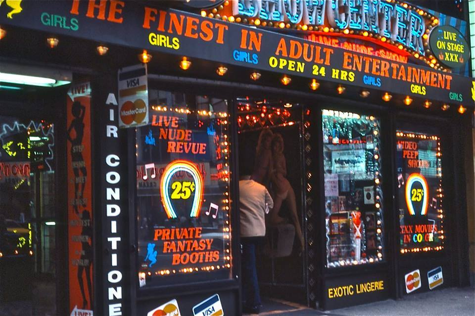
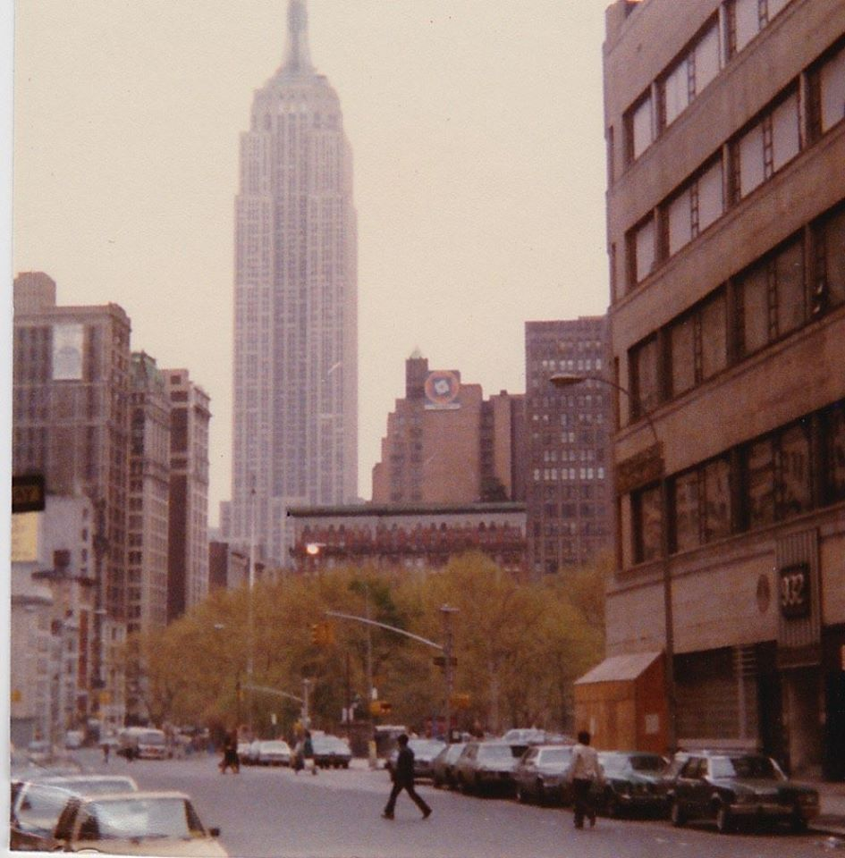
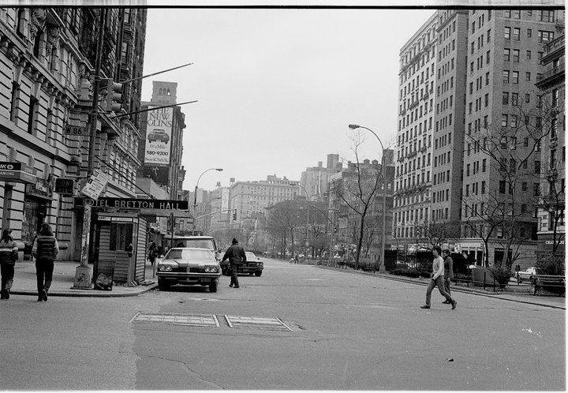
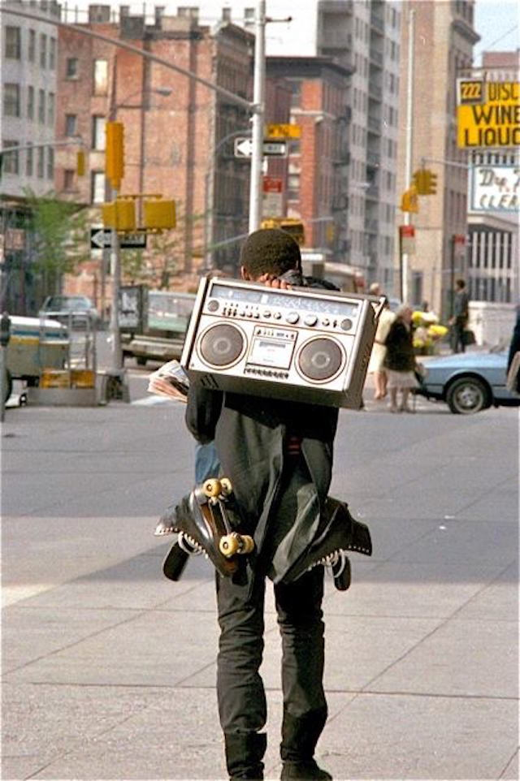
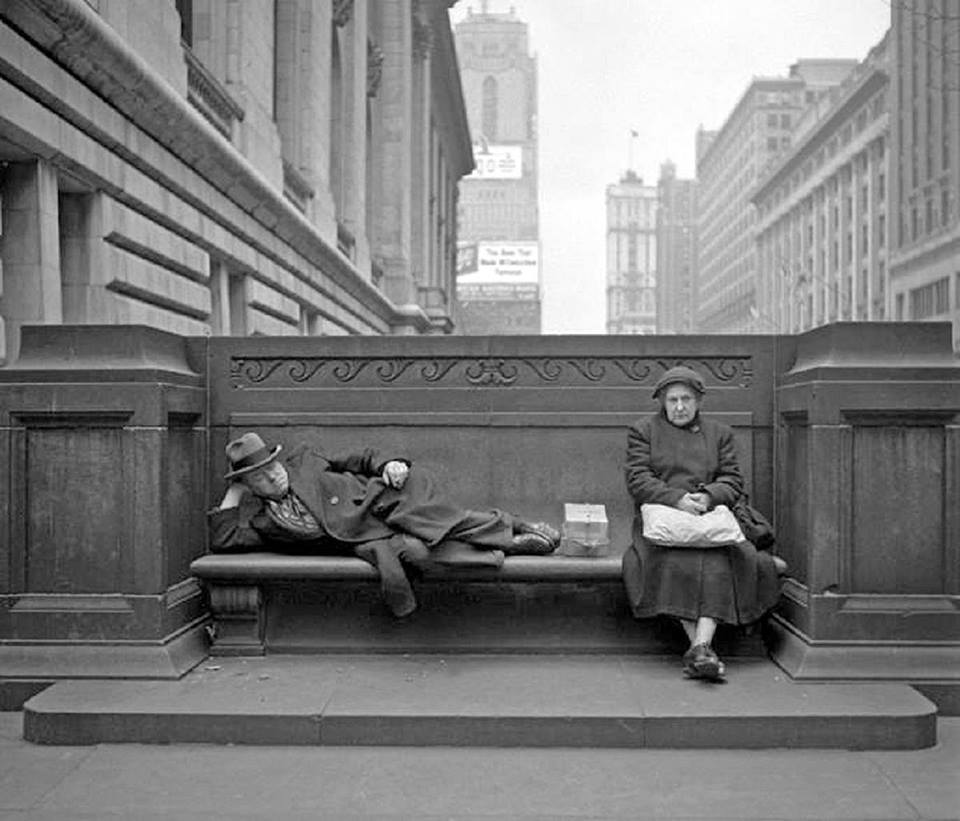
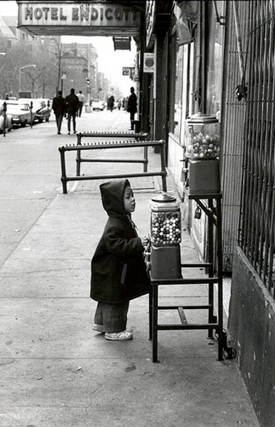
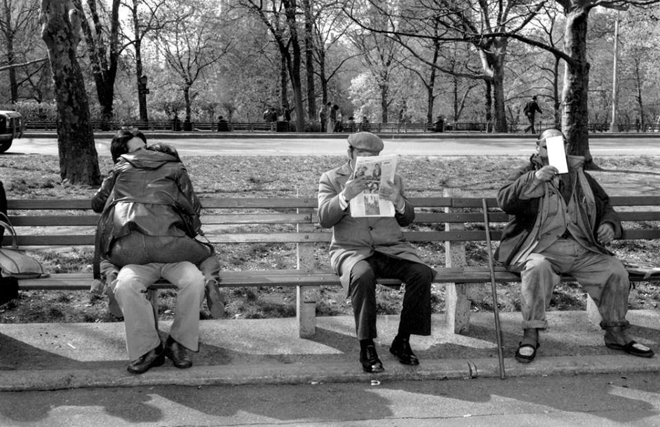
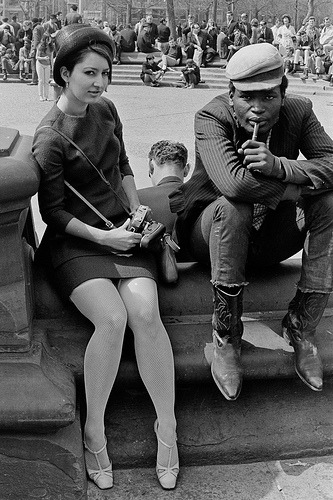
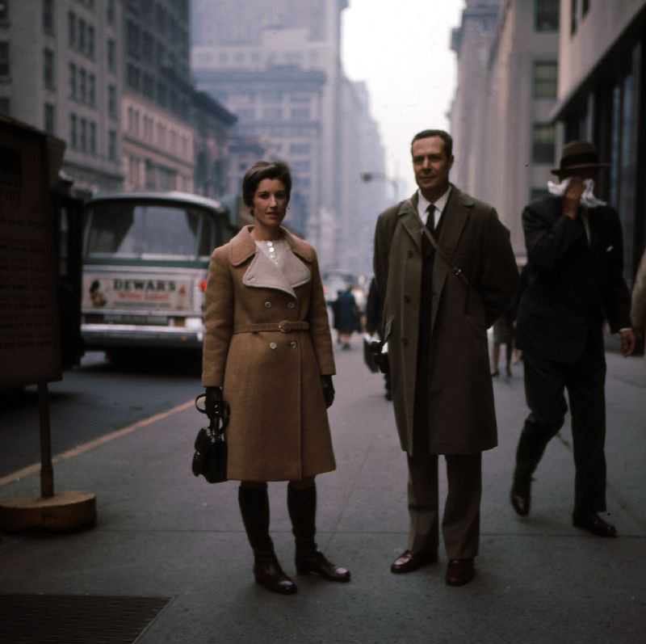
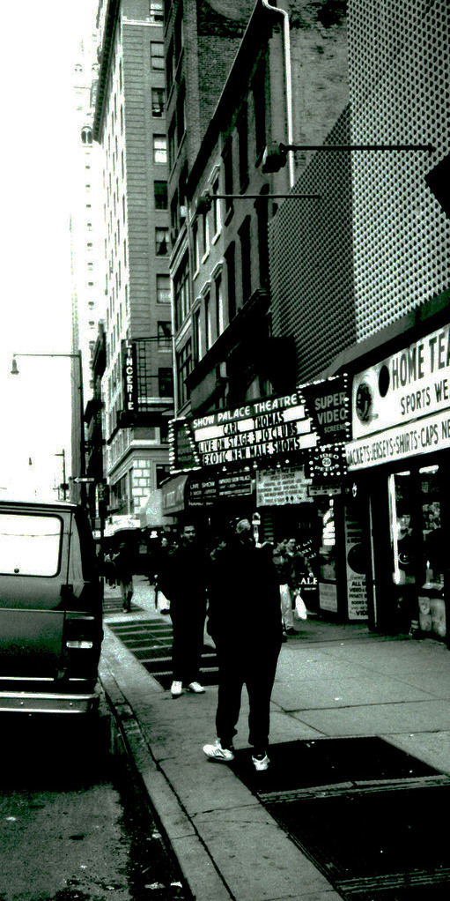

166th and St Nicholas Ave, 1973
166th and St Nicholas Ave, 1973

The Burger Joint in 1987.
In the 70s, it was a tiny place that looked like it’d be a health hazard (maybe it was), but was really a gem of the Upper West Side. At some point in the 80s it expanded, and managed to survive until just recently, when rents got too damn high.

Payphones, 1987

Harlem block party, 1978

Yuppie on the 1 train

Wayne Shorter relaxing near Lincoln Center, 1965
5th Ave at 65th St, 1973

The Village Gate was a nightclub at the corner of Thompson and Bleecker Streets in Greenwich Village, New York. Art D'Lugoff opened the club in 1958, on the ground floor and basement of 158 Bleecker Street. In its heyday, the Village Gate also included an upper-story performance space, known as the Top of the Gate. Throughout its 38 years, the Village Gate featured such musicians as John Coltrane, Coleman Hawkins, Billie Holiday, Duke Ellington, Dizzy Gillespie, Bill Evans, Dave Brubeck, Dexter Gordon, Art Blakey, Woody Shaw, Miles Davis, Nina Simone, Herbie Mann, and Aretha Franklin, who made her first New York appearance there.
Chelsea, late 1980s
Graffiti Photo Kings
by Carl Weston
Photo Kings was a crew in New York city the documented the last years of graffiti on the new york city subway system

Rooftops, 1979

$0.25. Happiness is cheap.

Broadway and 22nd, looking north at the Empire State Building

Broadway and 86th, looking South, 1981.

Mott Street, Chinatown, lower Manhattan. Photo taken in 1963, from AmeriCar the Beautiful.

Amsterdam and 70th


Guardian Angels on 42nd Street, 1988 © Matt Weber

Boom box in between cars, 1977

Come here often?

Oh, the places that people had to go for their porn in the 80s.
Well, if you didn’t look where you were going, you’d be that much more likely to get mugged.


Astor Place, 1980
17th St, 1983

The Ramones. 1977, the Bowery.

Looking uptown through Union Square, with the Met Life Tower and Empire State Building visible in the background. Photo taken circa 1988 by Les Tuttle.

Mmmm, street gum.
Columbus Ave between 81st and 82nd, 1967.

Times Square, 1985
Traffic on 34th Street, 1970s

wnyc:
Headquarters of Youth Gangs in Northern Brooklyn, circa 1970 (via reddit)
“Latin Secret Bachelors” sounds like the worst salsa band ever.
And I wouldn’t want to be in a gang with leadership too lazy to think of a better name than “Organization”
Midtown, 1973
Audubon Ballroom, Washington Heights, 1989 © Matt Weber

Christopher and West St, 1977
Sugar Ray’s. 124th and 7th, 1950.

View from 475 Broadway, New York 1976
Vintage gelatin silver print 16 x 20 inches
© Bevan Davies
The Purple Onion, W. 3rd St, 1971
Checkers in Bryant Park, 1968. Don’t know what the hell is up with newspaper-dude.
Édouard Boubat, Brooklyn Bridge, NYC, 1982

Central Park, 1979
William Claxton - Cootie Williams, NYC, 1960

Original Hipsters
Washington Square Park, circa 1960
photo by Winston Vargas
Subway, circa 1980

Street style c.1968 (New York)
New York City, 1985
Ferdinando Scianna

Party in Soho, 1976

Show Palace, 670 8th Avenue

Nap time.

1950s NYC subway system
at rush hour
Via Pinterest

Rollerskating in Central Park, 1988